Egzamin ósmoklasisty 2019 kwiecień
Na rysunku przedstawiono kartkę z kalendarza na rok 2017. 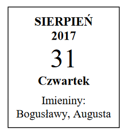 Natalia obchodzi urodziny 31
sierpnia, jej siostra Ewa – 18 sierpnia, a brat Karol – 2 października. Oceń prawdziwość podanych
zdań. Wybierz
P, jeśli zdanie jest prawdziwe, albo
F – jeśli jest fałszywe.
| W 2017 r. urodziny Ewy wypadły w piątek. |
P |
F |
| W 2017 r. dniem urodzin Karola był poniedziałek. |
P |
F |
PP
Liczba \(1450\) jest zaokrągleniem do rzędu dziesiątek kilku liczb naturalnych. Ile
jest wszystkich liczb naturalnych różnych od \(1450\), które mają takie zaokrąglenie? Wybierz
właściwą odpowiedź spośród podanych.
A.\( 4 \)
B.\( 5 \)
C.\( 9 \)
D.\( 10 \)
C
W tabeli zapisano trzy wyrażenia. 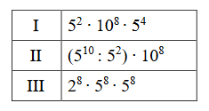 Które z tych wyrażeń są równe \(50^8\)? Wybierz właściwą
odpowiedź spośród podanych.
A.Tylko I i II
B.Tylko II i III
C.Tylko II
D.Tylko III
B
Dane są cztery wyrażenia:
I. \( 4+\sqrt{35} \)
II. \( 6+\sqrt{17} \)
III. \( 17-\sqrt{48} \)
IV. \( 15-\sqrt{26} \)
Wartości których wyrażeń są mniejsze od \(10\)? Wybierz właściwą odpowiedź spośród podanych.
A.I i II
B.II i III
C.III i IV
D.I i IV
D
Adam przygotował karty do gry z czterech arkuszy kartonu. Najpierw podzielił każdy
arkusz kartonu na cztery części, a następnie każdą z nich ponownie podzielił na cztery części.Tak
powstał komplet kart. W grze bierze udział \(5\) graczy, z których każdy otrzymuje jednakową liczbę
kart.
Uzupełnij poniższe zdania. Wybierz odpowiedź spośród oznaczonych literami
A i B oraz odpowiedź spośród oznaczonych literami C i D.
Adam przygotował
A
B
karty do gry.
Każdy gracz może otrzymać maksymalnie
C
D
kart.
BC
Dorota sporządziła z cukru i wody syrop do deseru. Stosunek masy cukru do masy wody
w tym syropie jest równy \(5 : 3\).
Ile procent masy tego syropu stanowi masa
cukru? Wybierz właściwą odpowiedź spośród podanych?
A.\( 25\% \)
B.\( 37,5\% \)
C.\( 40\% \)
D.\( 60\% \)
E.\( 62,5\% \)
E
W pewnej firmie zatrudnionych jest więcej niż \(10\) pracowników. Połowa z nich
zarabia po \(3000\) zł, a druga połowa – po \(4000\) zł.
Oceń prawdziwość
podanych zdań. Wybierz P, jeśli zdanie jest prawdziwe, albo F – jeśli jest
fałszywe.
| Średnia arytmetyczna zarobków w tej firmie jest równa \(3500\) zł |
P |
F |
| Gdy z pracy w tej firmie zrezygnują dwie osoby, z których jedna zarabia
3000 zł, a druga 4000 zł, to średnia arytmetyczna zarobków się nie zmieni. |
P |
F |
PP
Dokończ zdanie. Wybierz właściwą odpowiedź spośród podanych.
Wyrażenie: \((2a+3b)(3b-2a)\) jest równe
A.\( 4a^2-12ab+9b^2 \)
B.\( 9b^2+12ab+4a^2 \)
C.\( 9b^2-4a^2 \)
D.\( 4a^2-9b^2 \)
C
W układzie współrzędnych wyznaczono odcinek o końcach w punktach \(K\) i \(L\).
Punkty te mają współrzędne \(K=(–17, 6)\) oraz \(L=(15, –4)\). Na którym rysunku zakropkowana część
płaszczyzny zawiera środek odcinka \(KL\)? Wybierz właściwą odpowiedź spośród podanych. 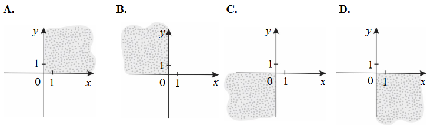
B
Kwadrat o boku \(a\) przedstawiony na rysunku I rozcięto na dwa przystające
prostokąty, z których ułożono figurę, jak na rysunku II. Pole ułożonej figury jest równe polu
kwadratu. 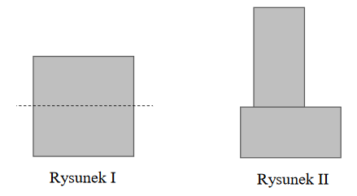 Oceń prawdziwość
podanych zdań. Wybierz
P, jeśli zdanie jest prawdziwe, albo
F – jeśli jest fałszywe.
| Obwód ułożonej figury jest większy o \(1{,}5a\) od obwodu kwadratu.
|
P |
F |
| Obwód ułożonej figury jest równy \(5a\). |
P |
F |
FP
Na rysunku przedstawiono trzy trójkąty. 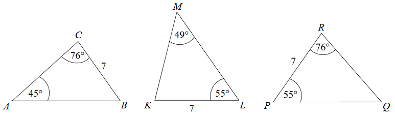
Dokończ zdanie. Wybierz właściwą odpowiedź spośród podanych.
Na
podstawie informacji przedstawionych na rysunku można stwierdzić, że
A.trójkąt \(ABC\) jest przystający do trójkąta \(KLM\).
B.trójkąt \(KLM\) jest przystający do trójkąta \(PQR\).
C.trójkąt \(PQR\) jest przystający do trójkąta \(ABC\).
D.wszystkie trójkąty są do siebie przystające.
B
Na rysunku przedstawiono równoległobok \(ABCD\) i trójkąt równoramienny \(AED\), w
którym \(|DE|=|AE|\). Miara kąta \(BCE\) jest równa \(106^\circ\). 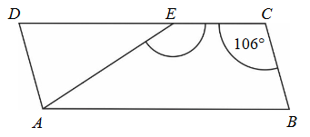
Jaką miarę ma kąt \(AEC\)? Wybierz właściwą odpowiedź spośród podanych.
A.\( 148^\circ \)
B.\( 122^\circ \)
C.\( 74^\circ \)
D.\( 58^\circ \)
A
Na rysunku przedstawiono czworokąt zbudowany z dwóch trójkątów prostokątnych. Dane
są długości boków \(|AB|=|BC|=1\) oraz \(|AD|=\sqrt{2}\). 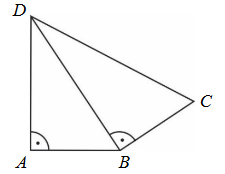
Dokończ zdanie. Wybierz właściwą odpowiedź spośród podanych.
Długość
boku \(CD\) jest równa
A.\( \sqrt{3} \)
B.\( 2 \)
C.\( 3 \)
D.\( 2\sqrt{2} \)
B
W koszu były \(203\) jednakowe sześcienne klocki. Zbudowano z nich możliwie
największy sześcian, a pozostałe odłożono.
Ile klocków odłożono? Wybierz
właściwą odpowiedź spośród podanych.
A.\( 150 \)
B.\( 125 \)
C.\( 78 \)
D.\( 53 \)
C
Na rysunku przedstawiono fragment siatki ostrosłupa prawidłowego czworokątnego.
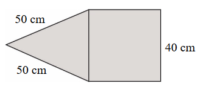
Dokończ zdanie. Wybierz właściwą odpowiedź spośród podanych.
Suma
długości wszystkich krawędzi tego ostrosłupa jest równa
A.\( 560 \) cm
B.\( 360 \) cm
C.\( 260 \) cm
D.\( 220 \) cm
B
Na diagramie przedstawiono informacje, jaki procent meczów w ciągu całego sezonu
drużyna piłkarska zakończyła wygraną, jaki – przegraną, a jaki – remisem. 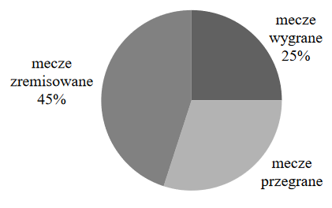 W ciągu całego sezonu drużyna
wygrała \(10\) meczów. Ile meczów w sezonie ta drużyna przegrała? Zapisz obliczenia.
\(12\)
Samochód osobowy przebył drogę \(120\) km w czasie \(75\) minut. Prędkość średnia
busa na tej samej trasie wyniosła \(80\ \frac{\text{km}}{\text{h}}\). O ile krótszy był czas
przejazdu tej drogi samochodem osobowym od czasu przejazdu busem? Zapisz obliczenia.
o \(15\) minut
Adam zamówił bukiet złożony tylko z goździków i róż, w którym goździków było \(2\)
razy więcej niż róż. Jedna róża kosztowała \(4\) zł, a cena jednego goździka wynosiła \(3\) zł. Czy
wszystkie kwiaty w tym bukiecie mogły kosztować \(35\) zł? Uzasadnij odpowiedź.
Nie
Z okazji dnia sportu w godzinach od 9:00 do 12:00 przeprowadzono połowę z
wszystkich konkurencji zaplanowanych na cały dzień, a między 12:00 a 14:00 – jeszcze \(\frac{1}{3}\)
z pozostałych. O godzinie 14:00 z powodu deszczu zakończono zawody. W tym dniu nie przeprowadzono
\(12\) zaplanowanych konkurencji. Ile konkurencji planowano przeprowadzić podczas całego dnia
sportu? Zapisz obliczenia
\(36\)
Prostokątną działkę o powierzchni \(3750\ \text{m}^2\) podzielono na trzy
prostokątne działki o jednakowych wymiarach, w sposób przedstawiony na rysunku. 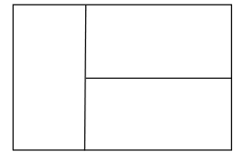 Jakie wymiary miała działka
przed podziałem? Zapisz obliczenia.
\(50\) m na \(75\) m
Paweł wyciął z kartonu trójkąt prostokątny \(ABC\) o przyprostokątnych \(12\) cm i
\(16\) cm (rysunek I). Następnie połączył środki dłuższej przyprostokątnej i przeciwprostokątnej
linią przerywaną równoległą do krótszej przyprostokątnej, a potem rozciął trójkąt \(ABC\) wzdłuż tej
linii na dwie figury. Z tych figur złożył trapez \(PRST\) (rysunek II). 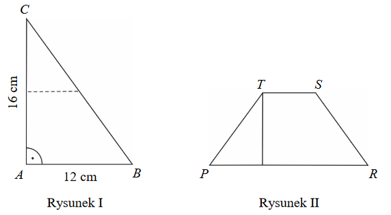 Oblicz różnicę obwodów trójkąta
\(ABC\) i trapezu \(PRST\). Zapisz obliczenia
\(4\) cm